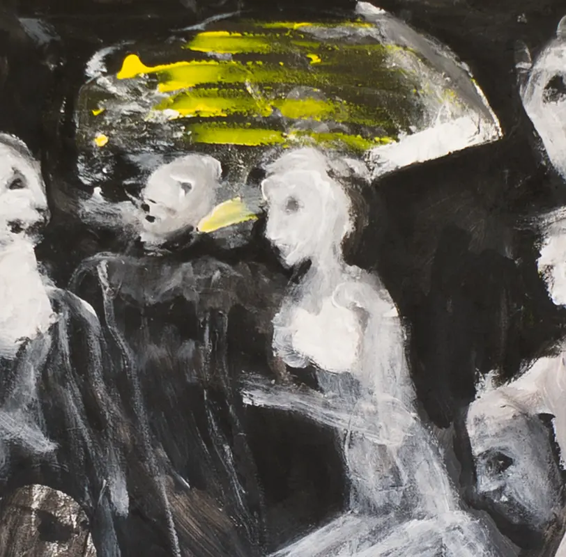
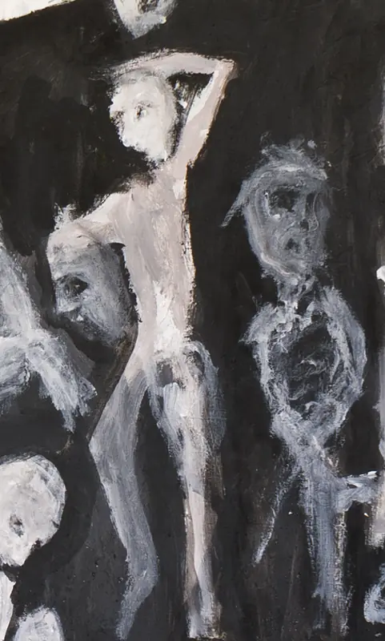
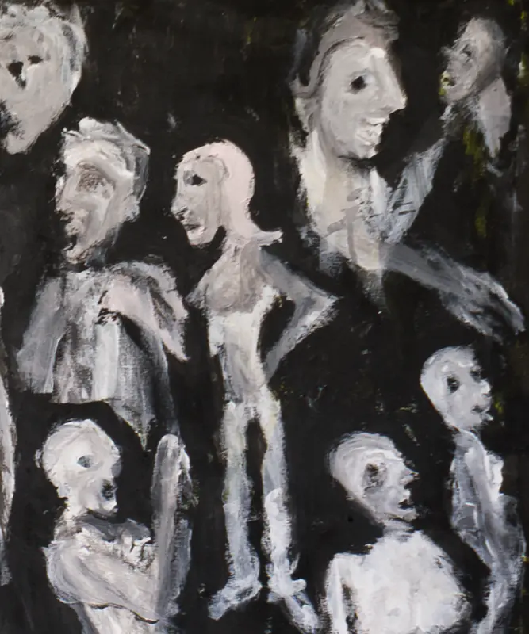
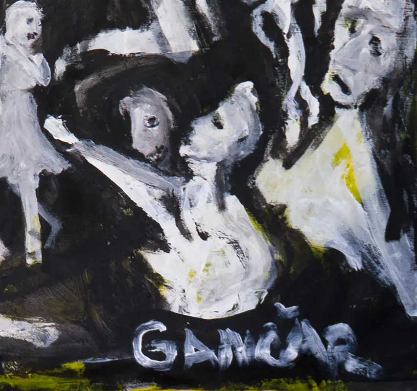
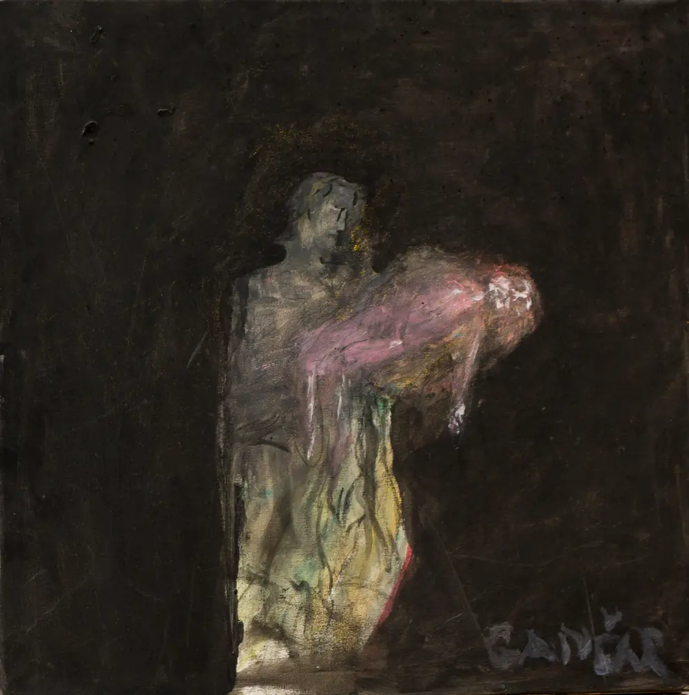
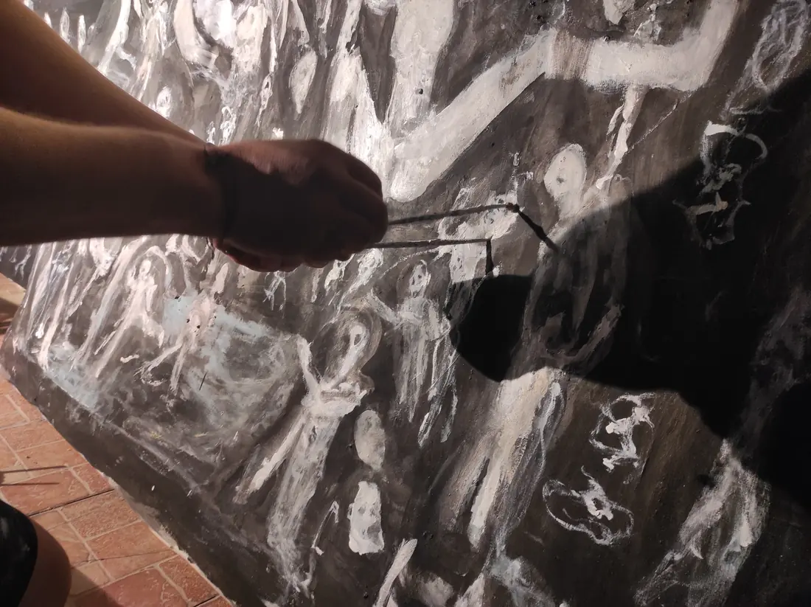
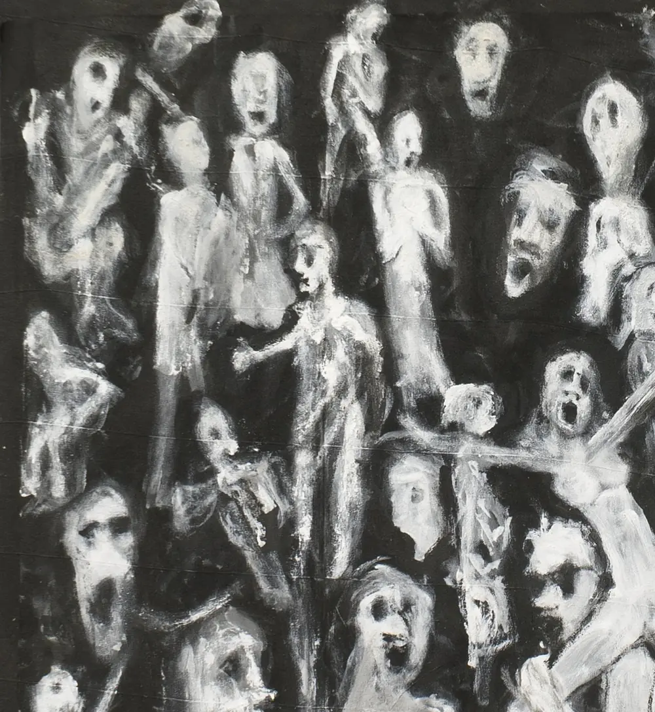

Černé plátno
Základem každého obrazu je tma: velkoformátové plátno, černě šepsované. Na něj Jakub nanese barvu. Pak odstoupí – a čeká.

Jakub Gančarmalíř · Jablonec nad Nisou
„Dívám se do té tmy a začne se mi něco objevovat. Já to pak zachycuju.“
01Cyklus
Cyklus obrazů, na kterém Jakub pracuje. Desítky postav, tváří a stínů, které vystupují z černého plátna – od jednoho okraje ke druhému.
Detaily z plátna táhněte →




02Styl a technika
„Věnuji se temnému expresionismu a art brut, svůj styl nazývám Gancarism Viva Umbrarum. K tvorbě využívám obouruční techniku (ambidextrii), kdy barvu nanáším oběma rukama současně přímo na černě šepsovaná velkoformátová plátna.“




01 / 04
Základem každého obrazu je tma: velkoformátové plátno, černě šepsované. Na něj Jakub nanese barvu. Pak odstoupí – a čeká.
Maluje obouruční technikou (ambidextrií): barvu nanáší oběma rukama současně, přímo na černý podklad.
„Když maluju, nepřemýšlím nad tím. Mám pocit, jako by moji ruku vedl někdo jiný.“
„Možná jsou to kousky duší. Ne duchové, ale nějaké zbytky lidí, kteří už tu nejsou. Nebo jejich pocity, které tu zůstaly. Sám se divím, kolik se mi jich tam objevuje, jako by čekaly ve frontě.“
Běžné formáty mu nestačí, a tak si rámy na obrazy stlouká sám.
„Postavy se tou černí prodírají, jako my všichni.“
03Obrazy
Výběr pláten z ateliéru. Klikněte na obraz a prohlédněte si ho zblízka. Názvy jsou autorovy, u většiny obrazů v angličtině. Rozměry, techniku a dostupnost doplníme s autorem.
Fotografie z 6. 9. 2026. Názvy doplníme s autorem.
Pohled zvenku
„V něčem to připomíná jeskynní malby nebo punkovou hudbu – je v ní energie, i když se hraje na tři akordy.“
Petr Šťovíček architekt, který se zabývá výtvarným uměním

04Příběh
Ve čtvrté třídě měl Jakub Gančar na vysvědčení čtyřku z výtvarné výchovy. A dodnes říká, že vlastně neumí kreslit: Kdybych měl nakreslit třeba kytičky nebo dítě na kolotoči, neuměl bych to.
K malování se dostal v těžkém období, kdy se mu rozpadal osobní život. Když mi bylo nejhůř, vzal jsem štětec do ruky. Vůbec nevím, co mě to napadlo. A od té doby v tom pokračuju.
Tvoří v hlubokém soustředění, ale společnost při práci vítá. Jeho obrazy přesto přitahují pozornost. A on sám pořád žasne nad tím, co na plátně vzniklo.
05Výstavy a projekty
Kde se obrazy objevily a na čem Jakub právě pracuje.
Výstavy
Rozpracováno
Jakub připravuje live painting performance cyklu Exodus z ticha. Jedná o něm s Colours of Ostrava, Roskilde Festival a Českými centry.
Jednání o aplikaci jeho děl do designu – projekt Art Car, o spolupráci se jedná s WrapStyle.
Hlásí se na mezinárodní rezidence MacDowell (USA), Social Dive (Tokio) a Visegrad Artist Residency.
Projekty jsou ve fázi příprav a jednání, termíny ani účast zatím nejsou potvrzené.
06Malířství Gančar
Malování je u Gančarů rodinné řemeslo. Malířem byl můj děda, táta a teď i já,
říká Jakub. Vede malířskou firmu ve třetí generaci – s důrazem na čistou práci, spolehlivost a férové jednání.
Jablonec nad Nisou · Liberecký kraj · celé severní Čechy
„Dekorativní malba od pana Gančara předčila naše očekávání. Nejen že stěna působí moderně a elegantně, ale zároveň krásně oživila celý prostor.“
07Kontakt
Chcete některý z obrazů vidět naživo, uspořádat výstavu, nebo potřebujete vymalovat? Napište – Jakub se ozve.
gancarism@gmail.com